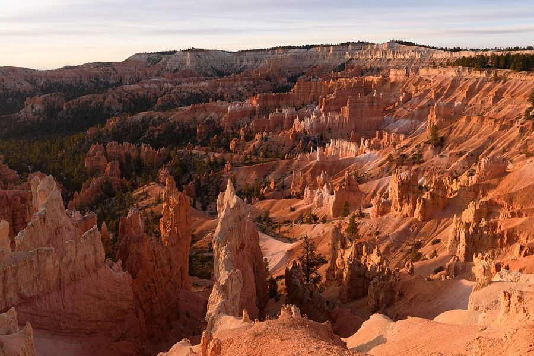
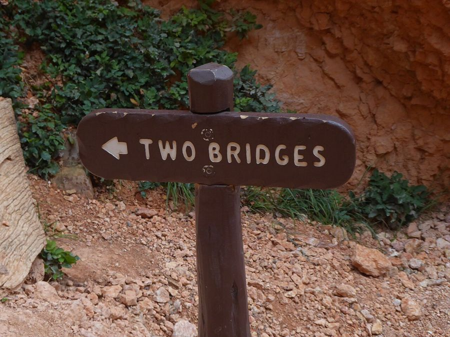
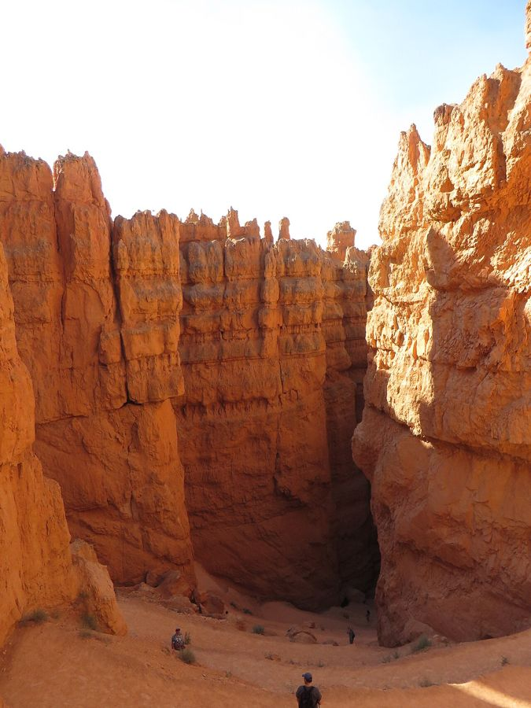
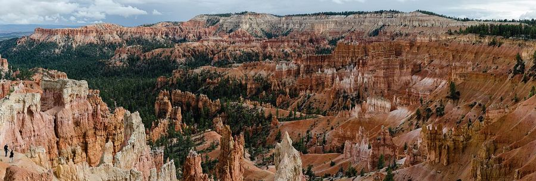

The loop starts at the rim and drops into the amphitheater by Queens Garden.
Photo: King of Hearts · CC BY-SA 4.0 · Wikimedia Commons

At the bottom the Queens Garden and Navajo Loop trails meet, among the hoodoos.
Photo: Peter Maiwald · CC0 · Wikimedia Commons

The climb back out passes through Wall Street, a narrow slot between tall walls.
Photo: Ken Lund from Reno, Nevada, USA · CC BY-SA 2.0 · Wikimedia Commons

The Rim Trail leads back to Sunrise Point, where the loop began.
Photo: Tuxyso · CC BY-SA 3.0 · Wikimedia Commons